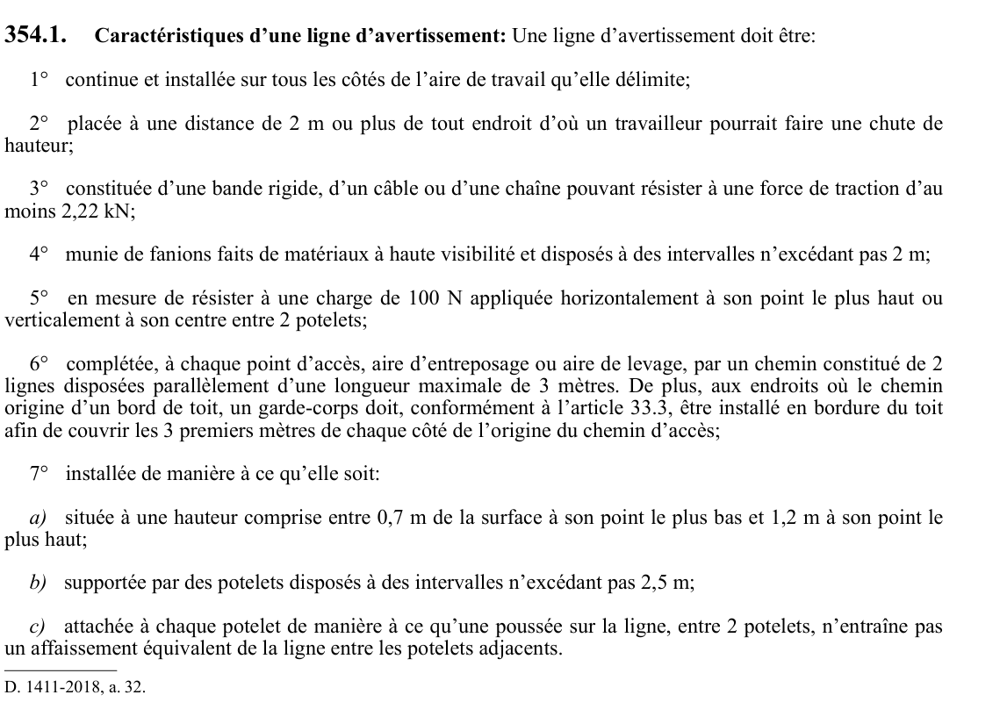

art-354.1-RSST : caractéristiques d'une ligne d'avertissement
Caractéristiques d'une ligne d'avertissement: Une ligne d'avertissement doit être: 1° continue et installée sur tous les côtés de l'aire de travail qu'elle délimite; 2° placée à une distance de 2 m ou plus de tout endroit d'où un travailleur pourrait faire une chute de hauteur;
🌐 LegisQuébec · 📄 PDF officiel
Texte officiel
Caractéristiques d’une ligne d’avertissement: Une ligne d’avertissement doit être:
1° continue et installée sur tous les côtés de l’aire de travail qu’elle délimite;
2° placée à une distance de 2 m ou plus de tout endroit d’où un travailleur pourrait faire une chute de hauteur;
3° constituée d’une bande rigide, d’un câble ou d’une chaîne pouvant résister à une force de traction d’au moins 2,22 kN;
4° munie de fanions faits de matériaux à haute visibilité et disposés à des intervalles n’excédant pas 2 m;
5° en mesure de résister à une charge de 100 N appliquée horizontalement à son point le plus haut ou verticalement à son centre entre 2 potelets;
6° complétée, à chaque point d’accès, aire d’entreposage ou aire de levage, par un chemin constitué de 2 lignes disposées parallèlement d’une longueur maximale de 3 mètres. De plus, aux endroits où le chemin origine d’un bord de toit, un garde-corps doit, conformément à l’article 33.3, être installé en bordure du toit afin de couvrir les 3 premiers mètres de chaque côté de l’origine du chemin d’accès;
7° installée de manière à ce qu’elle soit:
a) située à une hauteur comprise entre 0,7 m de la surface à son point le plus bas et 1,2 m à son point le plus haut;
b) supportée par des potelets disposés à des intervalles n’excédant pas 2,5 m;
c) attachée à chaque potelet de manière à ce qu’une poussée sur la ligne, entre 2 potelets, n’entraîne pas un affaissement équivalent de la ligne entre les potelets adjacents.
Texte de l’article 354.1 RSST, extrait de la couche texte du PDF officiel (page 124), sans OCR ni retouche. La capture ci-dessous et le PDF font foi.
{kind=link}

Toucher l'image pour l'agrandir🔗 Voir art. 354.1 RSST dans le PDF (page 124) · texte à jour au 1er juin 2024
📚 Source légale : D. 1411-2018, a. 32. · LégisQuébec
Voir aussi
- art. 354 : utilisation du filet de sécurité
- art. 355 : disposition abrogée
- ⚖️ Loi habilitante : LSST
- ↑ Index du bloc : Moyens et équipements de protection individuels ou collectifs
Pages qui pointent ici (4)
- art-323.1-RSST : barricades, barrières ou ligne d'avertissement Recueil législatif
- art-335.1-RSST : accès aux fosses Recueil législatif
- art-354-RSST : utilisation du filet de sécurité Recueil législatif
- RSST : Section 30 : Moyens et équipements de protection individuels ou collectifs Recueil législatif